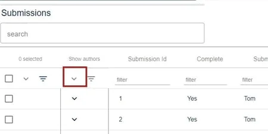
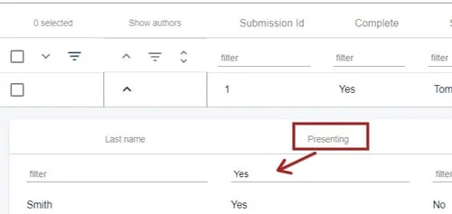
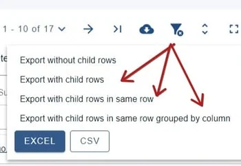

Downloading data on presenters only
For event organisersNot an organiser?
There may be occasions where you only require presenters' data, as opposed to all authors.#
Read The overview of tables article and Export table data to Excel first, so you are familiar with the tables and exporting of data in the Oxford Abstracts system.
After choosing all the fields you would like on display, click on the down arrow in the first column of the table to reveal all the child rows that contain the author(s) information for each submission.

In the uppermost child row, in the Presenting column, filter by Yes. This will filter all child rows wth Yes in this column in the table.

Click on the download icon, then choose one of the following options.


Did this page solve it?
Thanks — this helps us fix it.
Didn't solve it? Ask our support team
No question is too small, and there's no charge for asking. Raise a ticket and someone who knows the software will pick it up.